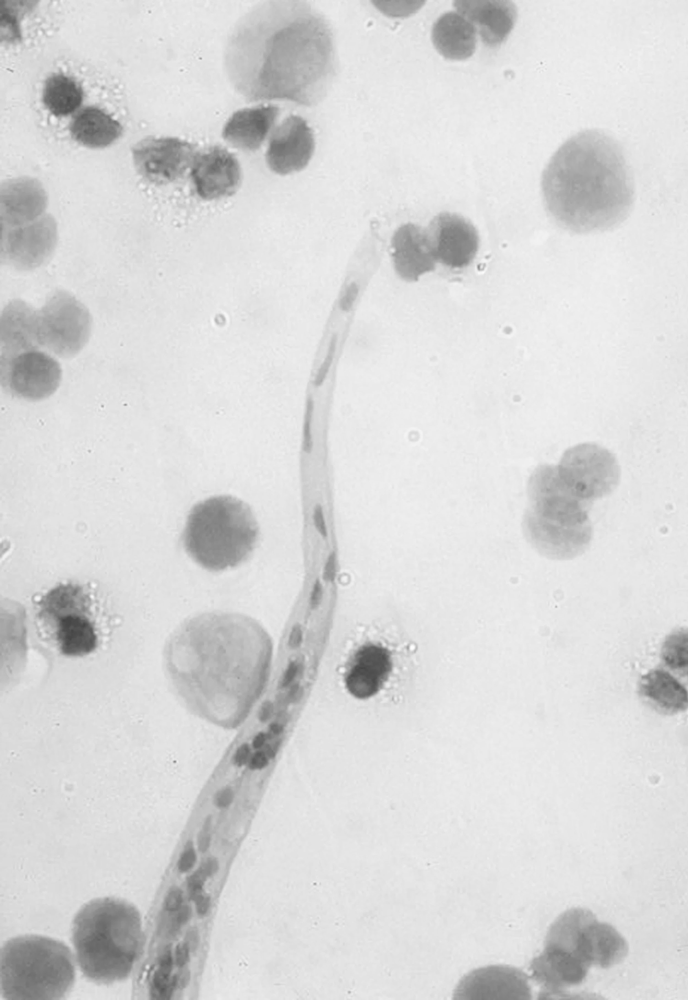

Repetitious Infection
Another aspect of the parasitic nature of technology is the economic exploitation of users. Many digital platforms offer their services for free, but in reality, users pay with their data. This data is then monetized through targeted advertising and other means, generating immense profits for tech companies. Just as parasites extract nutrients from their hosts, tech companies extract value from their users' data, often without their explicit consent or understanding.
This economic model creates a power imbalance, where users become the product rather than the customer. The lack of transparency and control over personal data can lead to a sense of exploitation and loss of autonomy. Furthermore, the economic benefits of this model are concentrated in the hands of a few large corporations, exacerbating economic inequality and reducing the ability of individuals to influence the digital landscape in meaningful ways.
he parallels between parasitic relationships in nature and the dehumanizing effects of technology highlight the need for a critical reassessment of our digital habits. To counteract the parasitic influence of technology, it is essential to foster digital literacy, promote healthy usage patterns, and prioritize activities that enhance genuine human connections and mental well-being. By doing so, we can reclaim our humanity in the digital age, ensuring that technology serves as a tool for enrichment rather than a parasite that depletes our essence.
First, fostering digital literacy is crucial. This involves educating individuals about the ways technology can manipulate behavior and affect mental health, as well as providing strategies for managing digital use. Schools and workplaces can play a significant role in promoting digital literacy, helping people develop healthy relationships with technology from an early age.
Second, promoting healthy usage patterns is essential. This can include setting limits on screen time, taking regular breaks from digital devices, and engaging in offline activities that promote physical and mental well-being. By creating intentional boundaries around technology use, individuals can reduce the risk of digital addiction and its associated harms.
Finally, prioritizing activities that enhance genuine human connections and mental well-being is key. This can involve spending quality time with friends and family, participating in community activities, and engaging in hobbies and interests that do not involve screens. By fostering real-world connections and experiences, individuals can counterbalance the isolating effects of digital engagement and maintain a sense of human connectedness.
In conclusion, while technology has the potential to greatly enhance our lives, it also poses significant risks to our social, mental, and cognitive well-being. By understanding the parallels between parasitic relationships in nature and the dehumanizing effects of technology, we can take proactive steps to reclaim our humanity in the digital age. Through digital literacy, healthy usage patterns, and genuine human connections, we can ensure that technology serves as a tool for enrichment rather than a parasite that depletes our essence.
This economic model creates a power imbalance, where users become the product rather than the customer. The lack of transparency and control over personal data can lead to a sense of exploitation and loss of autonomy. Furthermore, the economic benefits of this model are concentrated in the hands of a few large corporations, exacerbating economic inequality and reducing the ability of individuals to influence the digital landscape in meaningful ways.
he parallels between parasitic relationships in nature and the dehumanizing effects of technology highlight the need for a critical reassessment of our digital habits. To counteract the parasitic influence of technology, it is essential to foster digital literacy, promote healthy usage patterns, and prioritize activities that enhance genuine human connections and mental well-being. By doing so, we can reclaim our humanity in the digital age, ensuring that technology serves as a tool for enrichment rather than a parasite that depletes our essence.
First, fostering digital literacy is crucial. This involves educating individuals about the ways technology can manipulate behavior and affect mental health, as well as providing strategies for managing digital use. Schools and workplaces can play a significant role in promoting digital literacy, helping people develop healthy relationships with technology from an early age.
Second, promoting healthy usage patterns is essential. This can include setting limits on screen time, taking regular breaks from digital devices, and engaging in offline activities that promote physical and mental well-being. By creating intentional boundaries around technology use, individuals can reduce the risk of digital addiction and its associated harms.
Finally, prioritizing activities that enhance genuine human connections and mental well-being is key. This can involve spending quality time with friends and family, participating in community activities, and engaging in hobbies and interests that do not involve screens. By fostering real-world connections and experiences, individuals can counterbalance the isolating effects of digital engagement and maintain a sense of human connectedness.
In conclusion, while technology has the potential to greatly enhance our lives, it also poses significant risks to our social, mental, and cognitive well-being. By understanding the parallels between parasitic relationships in nature and the dehumanizing effects of technology, we can take proactive steps to reclaim our humanity in the digital age. Through digital literacy, healthy usage patterns, and genuine human connections, we can ensure that technology serves as a tool for enrichment rather than a parasite that depletes our essence.
